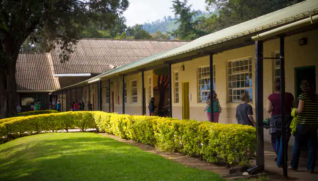

Country: Kenya
Sector - Agro Processing and Export Trade
Manual processes and disparate systems lead to inefficiencies in production scheduling, inventory management, quality control, and traceability.
Odoo ERP.
Manufacturing, Sales, Finance and Human Resources.
Needs Assessment, Customization & Integration, Data Migration, Testing, Training, Deployment and Continuous Support.
| Streamlined Operations | Enhanced Traceability |
| Optimized Inventory Management | Improved Quality Control |
| Efficient Resource Allocation | Better Customer Relationship Management (CRM) |
| Real-time Reporting and Analytics | Financial Control and Reporting |
| Scalability and Flexibility |
Country: Tanzania
Sector - Manufacturing
Inefficient inventory management, disjointed production scheduling, and manual record-keeping processes.
Odoo ERP.
Manufacturing, Sales, Finance and Human Resources.
Needs Assessment, Customization & Integration, Data Migration, Testing, Training, Deployment and Continuous Support.
| Efficient Production Processes | Enhanced Traceability |
| Optimized Inventory Management | Improved Quality Control |
| Efficient Resource Allocation | Better Customer Relationship Management (CRM) |
| Real-time Reporting and Analytics | Financial Control and Reporting |
| Scalability and Flexibility | Regulatory Compliance |
Country: Kenya
Sector - Education
Inefficient manual processes and fragmented communication hinder the effectiveness of the school's operations.
Odoo Education.
Odoo Education, eLearning, HR, Inventory, Finance.
Needs Assessment, Customization & Integration, Data Migration, Testing, Training, Deployment and Continuous Support.
| Streamlined Administration | Improved Communicationy |
| Enhanced Collaboration | Efficient Resource Management |
| Data-driven Decision Making | Enhanced Parental Involvement |
| Improved Efficiency | Financial Control and Reporting |
|  |